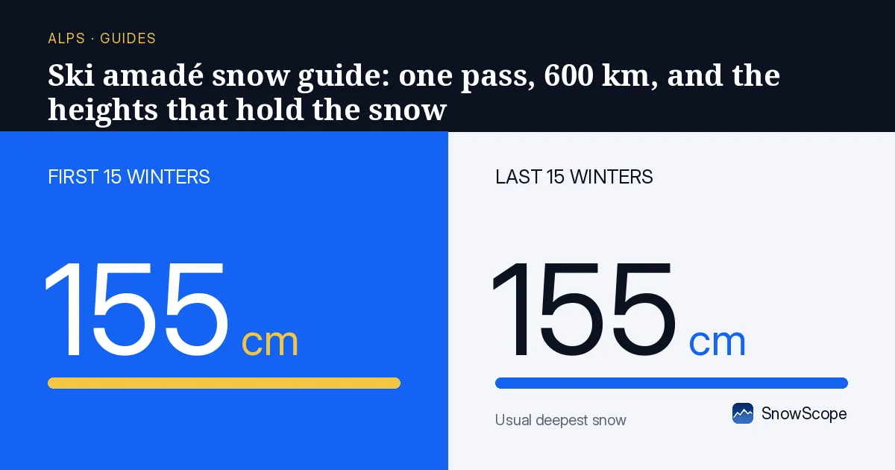
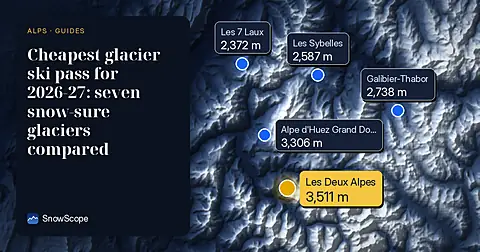

Ski amadé snow guide: one pass, 600 km, and the heights that hold the snow
Ski amadé joins five regions of Salzburg and Styria on one pass: 605 km of mapped runs and 239 lifts, from valley floors around 667 m to tops at 2642 m. One pass, but not one snow. The valleys of the Pongau are low for the Alps, and the top of the area is a different winter. Our snow history of 46 past winters shows where to stand at each point of the season.
See the live snow forecast for Ski amadé in the SnowScope appSnow depth, powder alerts and the 3D map, free.

The valleys: thin, and made by machines
At the base (667 m) the usual winter peak is only 39 cm, and a typical December has 14 cm. The lowest past winter peaked at 15 cm down there, the richest at 73 cm. This is why the valley runs of Flachau, Wagrain or Schladming are groomed on machine-made snow for most of the season: the natural cover is a bonus, not the base.
Mid-mountain: the real skiing
At mid-mountain (1654 m) the picture changes completely. The usual peak is 151 cm, the first snow lies by September 30 in half of the winters, and the monthly depths climb from 44 cm in December to 76 cm in January, 115 cm in February and 122 cm in March, the deepest month.
Mid-mountain holds at least 50 cm for 10 weeks in nine of ten winters and 19 weeks in half of them. The most reliable week is ISO week 10, in early March, with a usual 128 cm and every past winter above the 50 cm line.
The tops: Hochkönig, Zauchensee, Obertauern-side ridges
At the top of the pass area (2642 m) the usual peak is 243 cm. December already has 89 cm, March 195 cm and April 175 cm. The highest corners of Ski amadé, around Zauchensee and the Hochkönig, are where December trips should aim.
December: pick your height
A December week in Ski amadé is a decision about height. The valley gives 14 cm in a usual year, mid-mountain 44 cm and the top 89 cm. Nine of ten Decembers had at least 14 cm at mid-mountain, so the mid and upper runs are a safe bet; the lower runs depend on the cold for snowmaking.
Month by month at three heights
In December a usual winter has 14 cm at the base (667 m), 44 cm at mid-mountain (1654 m) and 89 cm at the top (2642 m). In January a usual winter has 22 cm at the base (667 m), 76 cm at mid-mountain (1654 m) and 128 cm at the top (2642 m). In February a usual winter has 28 cm at the base (667 m), 115 cm at mid-mountain (1654 m) and 178 cm at the top (2642 m).
In March a usual winter has 26 cm at the base (667 m), 122 cm at mid-mountain (1654 m) and 195 cm at the top (2642 m). In April a usual winter has 18 cm at the base (667 m), 83 cm at mid-mountain (1654 m) and 175 cm at the top (2642 m).
A poor winter and a rich winter
The spread matters as much as the middle. At mid-mountain, nine of ten past Marchs had at least 72 cm and one in ten had 158 cm or more; at the top the same range runs from 128 to 252 cm.
Over the whole winter the peak at mid-mountain ran from 87 cm in the poorest past winter to 207 cm in the richest, around a usual 151 cm; at the top from 148 to 416 cm around 243 cm. Snow lay on the ground at mid-mountain for 208 days in a usual winter, and the first snow of the season settled there by September 30 in half of the winters. These are model values for the area over 46 past winters, not resort measurements; they describe what to expect, not what the groomers will add.
46 winters of change
The usual peak at the top moved from 249 cm in the first 15 winters of our record to 244 cm in the last 15; at mid-mountain from 155 to 155 cm. The days with snow on the ground at the base dropped from 166 to 149. Last winter's peak at mid-mountain was 87 cm, well under the usual 151 cm.
Tips for skiers
- In December, book the higher villages and ski the upper halves; the valley runs are machine-made.
- February and March give the deepest natural snow across the whole area.
- Our depths are an estimate for the area from past winters, not resort measurements; check the lift status on the official site.
- The pass covers five regions: use a quiet day to drive to a different valley rather than queue at the home lift.
References and credits
- Wikipedia, 'Ski amadé', retrieved 22 November 2026: pass area of five regions in Salzburg and Styria. de.wikipedia.org/wiki/Ski_amad%C3%A9
About these numbers
Snow numbers: SnowScope snow history, 46 past winters (1980-81 to 2025-26) at three heights of the resort, a model of the past corrected for height (an estimate for an area, not resort reports). Lift, run and access facts: the sources listed below, checked on the date shown.
Official avalanche bulletins: Lawinenwarndienst Salzburg
Cite this report
For research, teaching or the press: the numbers and charts are free to reuse under CC BY 4.0 with this citation.
SnowScope (2026), Ski amadé snow guide: one pass, 600 km, and the heights that hold the snow, https://snowscope.app/blog/en/2026/11/ski-amade-snow-guide-which-height-holds-snow-best.html, accessed 2026-11-22
SnowScope (Atlas Labs). (2026, November 22). Ski amadé snow guide: one pass, 600 km, and the heights that hold the snow. SnowScope snow reports. https://snowscope.app/blog/en/2026/11/ski-amade-snow-guide-which-height-holds-snow-best.html
BibTeX
@misc{snowscope2026skiamadesnowguidewhichhe,
author = {{SnowScope (Atlas Labs)}},
title = {Ski amadé snow guide: one pass, 600 km, and the heights that hold the snow},
year = {2026},
month = nov,
howpublished = {\url{https://snowscope.app/blog/en/2026/11/ski-amade-snow-guide-which-height-holds-snow-best.html}},
note = {Published 2026-11-22 11:14 UTC; accessed 2026-11-22}
}· CC BY 4.0 · Methods, data and tools →
Ski amadé: snow and temperature by height, this winter vs last (tools) →
Follow Ski amadé
Free: a message when fresh snow is coming, and the forecast every morning.
More snow reports

Early-season snow in the Alps is running 38% above the 46-year average. La Plagne's mid-slopes hold 36 cm more than usual for this date, with heavy snow forecast through Sunday.

Glacier skiing from 68 EUR a day: we compared seven glaciers in France, Austria, Germany and Switzerland by price and by the snow they usually hold in December.

New snow forecast for the Alps through early December. Saint François Longchamp leads with 228 cm expected over 14 days, starting with 35 cm on Thursday.